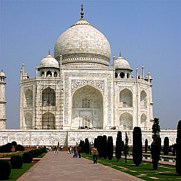

Original taj mahal pic here

This one I sharpened with alpha = 1.5
this one I blurred with alpha = 1.5
Here we are sharpening and blurring the image(1, 2.1), making hybrid images(2.2), and blending two pictures.
Here, I defined two operators, used convolve to produce partial derivatives etc. etc. Check the image for more info:)
edge image here
blurred edge image here
Here, I think they are really similar except for second part having more noise.
Going to part 2, called fun with frequencies(I did not have fun), we tried sharpening an image. We also tried blurring it. We also tried sharpening the image, blurring it, and then sharpenning it again - just for fun(this was actually fun ig).
Original taj mahal pic here
This one I sharpened with alpha = 1.5
this one I blurred with alpha = 1.5
Original taj mahal pic here
This one I sharpened with alpha = 1.5
this one I blurred with alpha = 1.5
Here we can see that resharpened image is still blurry.
Here we are taking two pictures, blend higher frequencies of one picture and lower frequencies of the other(sigma = 5). This makes an image that leads to different interpretations at different distances.
Here's a pic of Derek and cat. If you look from far away you can sense the presence of cat, however at a closer look it's Derek.
This is a picture of me and a guy who looks like me(no offense to the guy).
This is me here
This is Nurzhan
Here are the ffts I got
first pic
Second pic
blurred first pic fft
high pass second pic fft
Hybrid fft
In this part we implemented Gaussian and Laplacian stacks and use them for multi-resolution blending. Created a mask with white left half and black right half.
These are left levels(1-5), right levels, and total levels. I am not sure why are they black&white after the third photo... Final image below:

I was having so much fun making an oraple(orange and apple) that I thought what if we try to blend some pieces of art for part 2.4. I downloaded "the great wave" and "fine wind, clear morning" by Hokusai, and tried blending the mountain into the wave. Images and a mask I made below:
The Great Wave
Fine wind, clear morning
my mask;-;
now, to blend them, as I formerly mentioned, I needed to make a mask. Other than than, I used the same methods.
Now the failed, but not really image of the great wave blended with clear morning